Manage Single Sign On for Account Access¶
GALE provides users with a default sign-in flow as the standard authentication method. However, for organizations seeking enhanced security and convenience, administrators can enable Single Sign-On (SSO) through the Settings console.
By activating SSO, users can access their GALE accounts using a single set of secure credentials managed by an external Identity Provider (IDP). This setup streamlines the login process and integrates users into a unified authentication framework.
SSO is a powerful option for organizations looking to balance convenience and security in user authentication. It offers the following key benefits:
- Secure Access: It reduces password fatigue and the risk of phishing or weak passwords by focusing on one strong password.
- Simplified User Management: Administrators can manage access centrally, making it easier to grant or revoke access across various accounts.
- Improved User Experience: Reduces the need for multiple logins into an account.
- Centralized Access Control: Admins can monitor and enforce security policies across all applications more efficiently.
Note
Only account owners and admins can enable/disable SSO from the Settings console.
GALE supports SSO for the following protocols and providers:
| Protocol | Provider |
| SAML | |
| WS-Federation | |
| OpenID Connect |
How SSO Works¶
- User Initiates Login: A user attempts to access his GALE account.
- Redirect to IDP: The Service Provider (SP) redirects the user to an IDP login page for authentication.
- User Authenticates: The user provides their credentials to the IDP.
- Authentication Tokens: If successful, the IDP issues an authentication token.
- Token Exchange: The SP uses this token to grant the user access to the application.
- Access Granted: Once authenticated, the user can access the allowed GALE account(s) without logging in again during the same session.
Access Single Sign-on¶
To access the SSO feature, follow the steps below:
- Sign in to your GALE account.
- Click Settings on the top menu.
- Go to Security & Control > Single Sign On on the left navigation menu.
If you’re using this feature for the first time, the following screen appears.
{kind=link}
If SSO is already configured, the Single sign-on setup page is displayed, as shown below.
{kind=link}
Enable SSO¶
Depending on your company's security requirements, you can enable SSO for your GALE account users. Enabling SSO includes selecting the protocol and IDP and providing the parameters to integrate with the IDP service.
Important
If you already have the required parameters for Okta, move directly to Step 18.
Configuration Parameters¶
The following parameters should be configured on GALE based on the protocol and IDP you select:
| Protocol | IDP | Parameters |
| SAML | Okta |
|
| SAML | Onelogin |
|
| SAML | Other |
|
| WS-Federation | Windows Azure |
|
| WS-Federation | Other |
|
| OpenID Connect | No additional configuration is required. Your users will be authenticated based on their valid Google credentials. |
Steps to Enable SSO¶
To enable SSO on the Settings console, follow the steps below:
- Access the Single sign on page.
-
If no SSO is enabled, click Enable SSO. 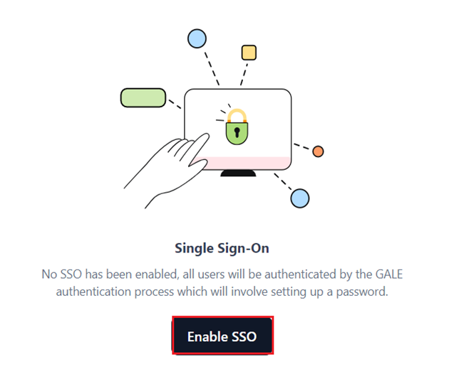
-
If SSO is already enabled for a provider, click the Enable SSO tab and do one of the following:
-
Change and save the existing parameters for the enabled SSO provider.
- Disable the enabled SSO and set up a new configuration.
-
Select a different protocol/provider and complete the configuration.
-
Select the required protocol and SP. The default selections are SAML and Okta.
- Configure the parameters for one of the following SSO protocols and providers:
{kind=link}
- SAML: Okta, Onelogin, or Other. Learn more.
- WS-Federation: Windows Azure or Other. Learn more.
- OpenId connect: Google. Learn more.
- Click Save.
A success message is displayed once the SSO setup is complete. 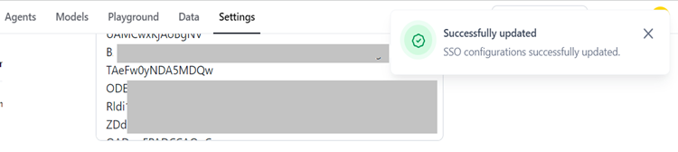
{kind=link}
Additionally, the timestamp of when you enabled SSO is displayed as shown below: 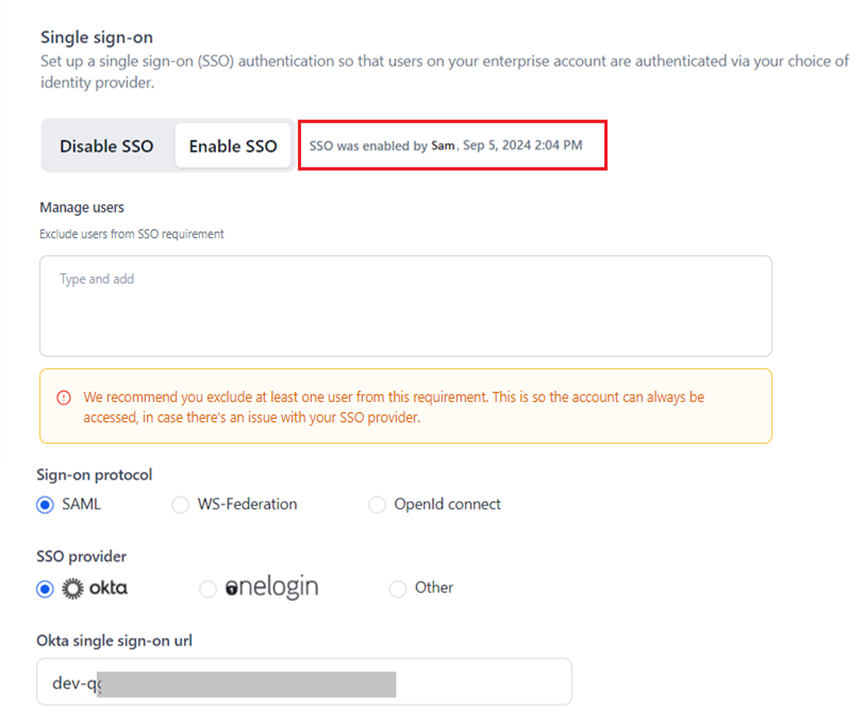
{kind=link}
SAML¶
Security Assertion Markup Language (SAML) is a protocol for web-based SSO that uses secure tokens instead of passwords. It allows IDPs and SPs to operate separately. When a user logs into a SAML-enabled app, the service provider requests authorization from the IDP, which authenticates the user and grants access to the application.
How SAML works¶
SAML SSO works by transferring the user’s identity from one place (the IDP) to another (the SP) through an exchange of digitally signed XML documents.
When a user logs into a system that acts as an IDP and tries to access his GALE account, the following happens:
- The user accesses the remote app on the IDP portal using the sign-on endpoint URL, and the application loads.
- The application identifies the user’s origin (by application subdomain, user IP address, or similar) and redirects the user back to the IDP, asking for authentication. This is the authentication request.
- The user either has an existing active browser session with the IDP or establishes one by logging into the IDP.
- The IDP builds the authentication response in an XML document containing the user’s username or email address, signs it using an X.509 certificate, and posts this information to the SP.
- The SP, which already knows the IDP and has a certificate fingerprint, retrieves the authentication response and validates it using the certificate fingerprint.
- The user's identity is established, and the user is provided with the GALE account access.
Okta Configuration¶
Okta's Single Sign-On (SSO) offers a seamless user experience by enabling one login for multiple applications across different platforms. It enhances security through multi-factor authentication (MFA), zero-trust architecture, and passwordless options.
Okta's scalable and customizable platform reduces IT overhead, improves productivity, and supports compliance with governance standards like GDPR and HIPAA.
To configure SSO using SAML and Okta, follow the steps below:
- Go to GALE’s Single sign-on page.
- Select the Enable SSO tab.
- Select SAML for Sign-on protocol and Okta for SSO provider. 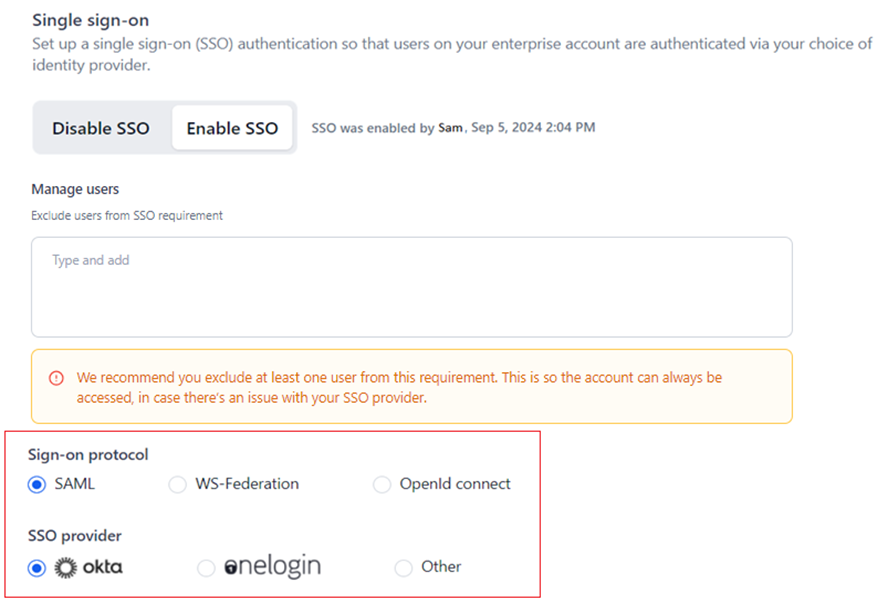
{kind=link}
Note
If you already have the required parameters for Okta, move directly to Step 18.
- Login to the Okta developer portal.
- On the dashboard, click Applications on the left menu.
- Click Create App Integration. 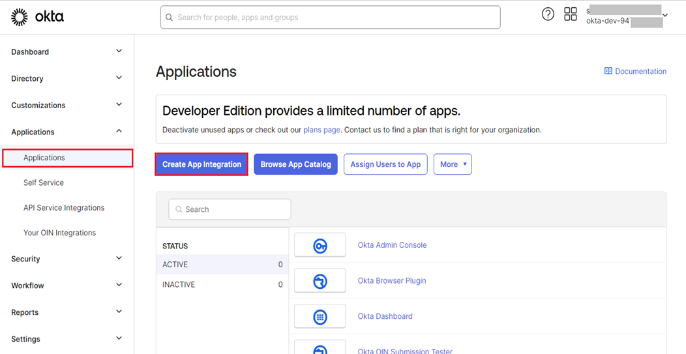
{kind=link}
- In the Create a new app integration window, select SAML 2.0 and click Next. 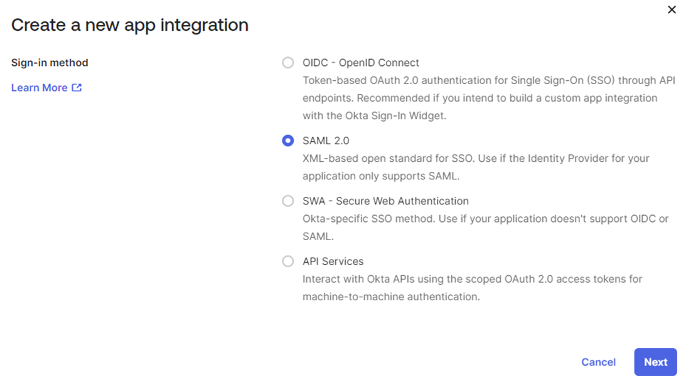
- On the Create SAML Integration page, provide the App Name under General Settings, and click Next. 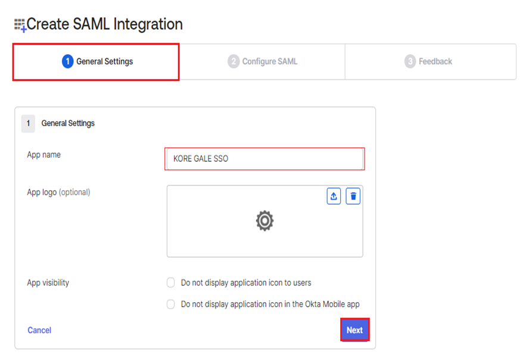
- Copy the following values from GALE’s SSO setup page and paste them into Okta under Configure SAML:
- ACS url for SP initiated SAML flow: Paste into Single sign-on URL.
- ACS url for IDP initiated SAML flow: Paste into Audience URI (SP Entity ID).
{kind=link}
{kind=link}
| Okta Parameter | Description |
| Single sign-on URL | The location where the SAML assertion is sent with an HTTP POST. This is often called the SAML Assertion Consumer Service (ACS) URL for your application. |
| Audience URI (SP Entity ID) | The application-defined unique identifier that is the intended audience of the SAML assertion. This is most often the SP Entity ID of your application. |
- Click Next.
- Click Finish under Feedback on Okta’s Create SAML Integration page.
- Once the app is created, go to the Sign On tab and click View Setup Instructions.
- On the How to Configure SAML 2.0 for
Application page, do the following from Okta into GALE: - Copy the Identity Provider Single Sign-On URL value and paste it into the Okta Single Sign-On URL.
- Copy the Identity Provider Issuer value into the Identity provider issuer. 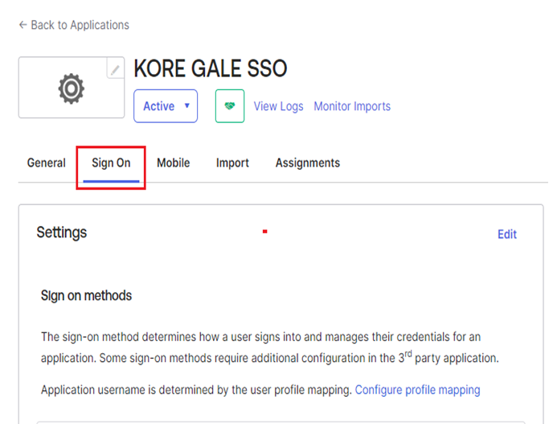
- Go to Sign On > SAML Signing Certificates on your Okta app.
- Click Download certificate under Actions for the required certificate. 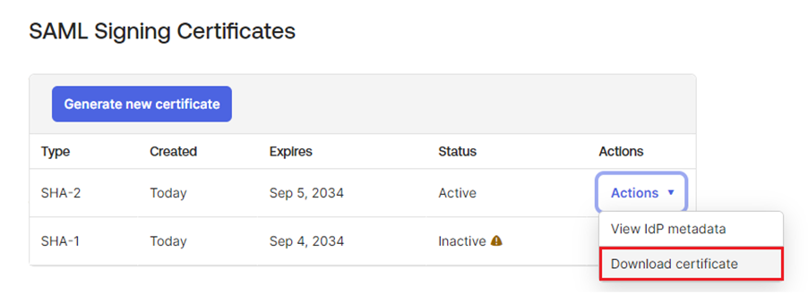
- Once the certificate is downloaded, open it in Notepad and copy the data between the BEGIN CERTIFICATE header and END CERTIFICATE footer. 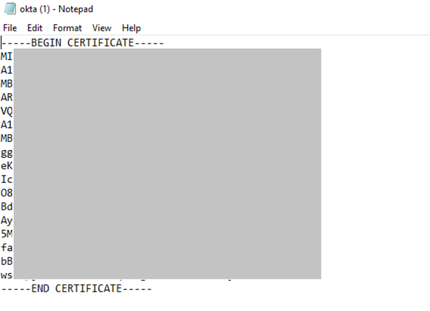
- Paste the value into the Certificate field on GALE’s SSO setup page. 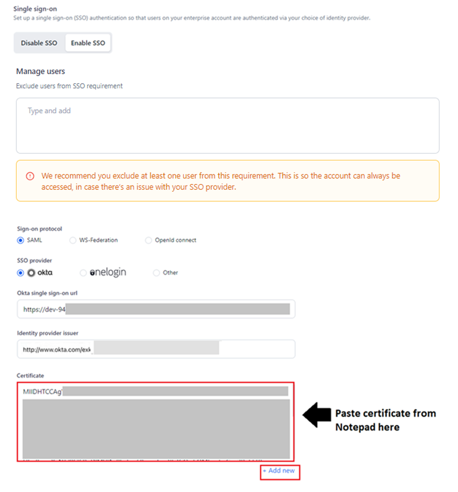 To add a new certificate, click + Add new.
{kind=link}
{kind=link}
{kind=link}
{kind=link}
Note
When multiple certificates are provided, the system uses the latest one. If the latest certificate is invalid, it automatically switches to other available certificates.
- Click Save. Once SSO for Okta is complete, the system will redirect to the Okta Sign in page for GALE account authentication. 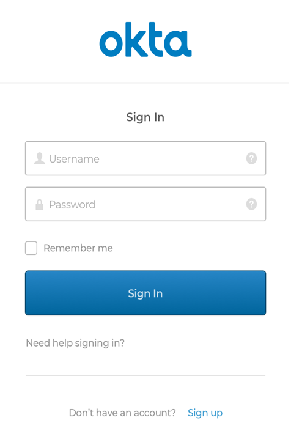
{kind=link}
Onelogin Configuration¶
OneLogin's Single Sign-On (SSO) solution simplifies user access by enabling a single login for multiple applications across platforms, improving workflow efficiency. It enhances security with advanced multi-factor authentication (MFA), passwordless options, and machine learning-based risk assessments that are compliant with security standards like GDPR and HIPAA.
To configure SSO using SAML and Onelogin, follow the steps below:
- Go to GALE’s Single sign-on page.
- Select the Enable SSO tab.
- Select SAML for Sign-on protocol and Onelogin for SSO provider.
- Login into the Onelogin developer portal.
- Go to Applications > Add Apps to access your app. 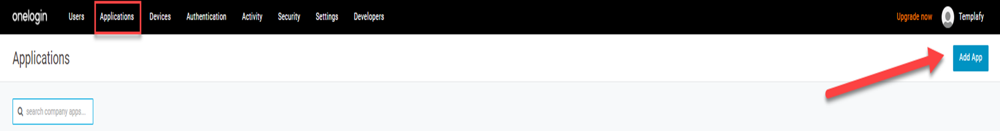
{kind=link}
- Search for your GALE app and click Enter.
- Click your app to view the Add App page. Optionally, change the display name or the icons displayed to your users in the OneLogin portal, and then click SAVE. The GALE app has been added to your company apps for OneLogin and is listed on the app page.
- Copy the following values from SSO > Enable SAML2.0 on Onelogin and paste them into the relevant fields on GALE’s SSO setup page:
- OneLogin SAML 2.0 Endpoint (HTTP): Paste into SAML 2.0 endpoint.
- OneLogin Issuer URL: Paste into Issuer URL. 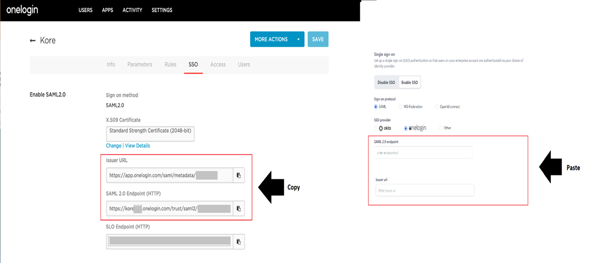
- In the OneLogin X.509 Certificate field, click View Details. The Standard Strength Certificate (2048-bit) page is displayed. 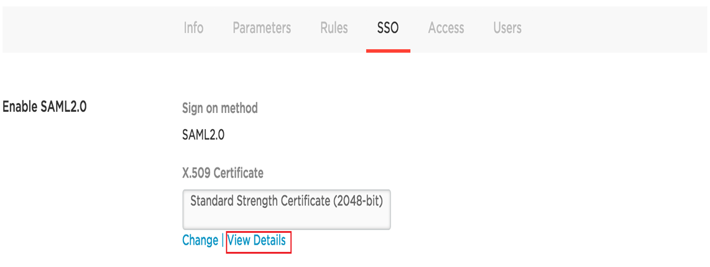
- In the X.509 Certificate section, copy the certificate data and then paste it into the X.509 Certificate field on GALE’s SSO setup page.
{kind=link}
{kind=link}
Note
Copy data after the BEGIN CERTIFICATE header and before the END CERTIFICATE footer.
{kind=link}
Note
When multiple certificates are provided, the system uses the latest one. If the latest certificate is invalid, it automatically switches to other available certificates.
- Copy the following field values from GALE’s SSO setup page into the relevant fields in Onelogin:
- ACS URL for SP Initiated SAML Flow.
- ACS URL for IDP Initiated SAML Flow. 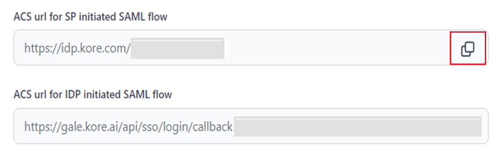
- Click Save on GALE and Onelogin.
{kind=link}
Once SSO for Onelogin is complete, the system redirects to the Onelogin Sign in page for GALE account authentication.
{kind=link}
Other Configuration¶
To configure and enable SSO using SAML for other IDPs of your choice, follow the steps below:
- Go to GALE’s Single sign-on page.
- Select the Enable SSO tab.
-
Select SAML for Sign-on protocol and Other for SSO provider. 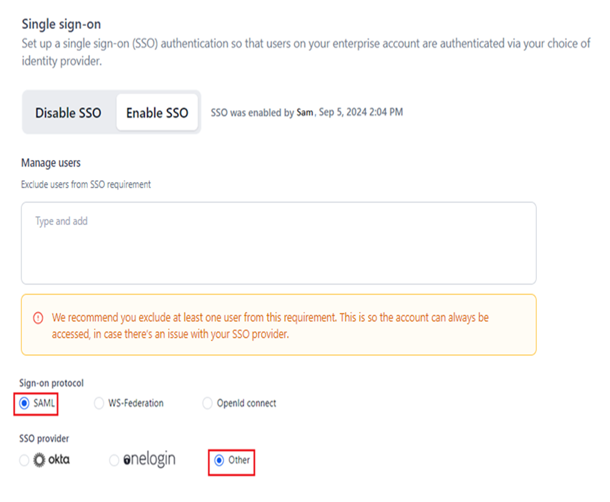
-
Fetch the necessary SSO configuration parameters listed in this table from your app's Settings page within the IDP developer portal.
- Paste them into the relevant fields on GALE’s SSO setup page.
{kind=link}
To add a new certificate, click +Add new. 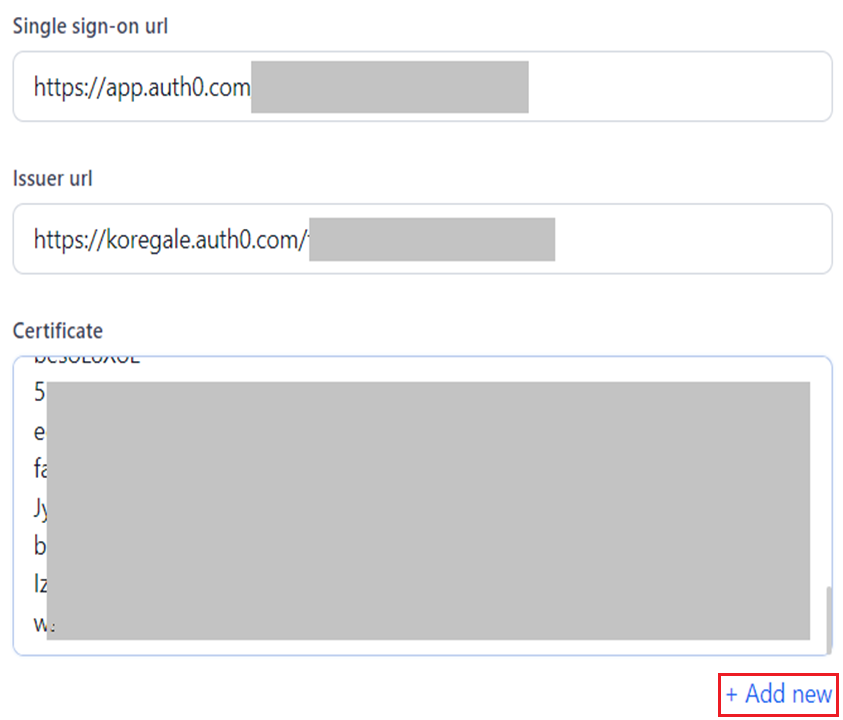
{kind=link}
Note
When multiple certificates are provided, the system uses the latest one. If the latest certificate is invalid, it automatically switches to other available certificates.
- Copy and paste ACS url for SP initiated SAML flow and ACS url for IDP initiated SAML flow values from GALE into the relevant app fields within the IDP’s developer portal.
- Click Save.
WS-Federation¶
WS-Federation (Web Services Federation) is a protocol used for federated identity management. It allows the secure sharing of identity information across different security domains or systems. It enables Single Sign-On (SSO) by allowing users to authenticate with a trusted IDP and access services across different organizations or platforms without logging in multiple times.
How WS-Federation Works¶
When a user logs into a system that acts as an IDP and tries to access his GALE account, the following happens:
- The relying party redirects the user to the IDP for authentication.
- The IDP authenticates the user through credentials or another authentication mechanism.
- Security Token Issued: Once authenticated, the IDP issues a security token containing the user’s identity and claims.
- Token Sent to Relying Party: The token is sent back to the relying party, which validates it.
- Access Granted: The user is granted access to the requested service based on the verified token.
Windows Azure Configuration¶
Azure AD Federation with WS-Federation offers seamless SSO integration with Microsoft services, advanced security features like MFA and conditional access, and centralized user management. It supports flexible authentication protocols, scales with organizational growth, and ensures high availability for an enhanced user experience.
To configure SSO using WS-Federation and Windows Azure, follow the steps below:
- Go to GALE’s Single sign-on page.
- Select the Enable SSO tab.
- Select WS-Federation for Sign-on protocol and Windows Azure to Configure SSO for WS-Federation.
- Open Server Manager on the computer running AD FS, then choose AD FS > Tools > AD FS Management.
-
Copy IdP URL from your IdP metadata (FederationMetadata.xml). You can find your ADFS Federation Metadata file URL on the AD FS server through ADFS Management in ADFS > Service > Endpoints > Metadata. It should look like this: 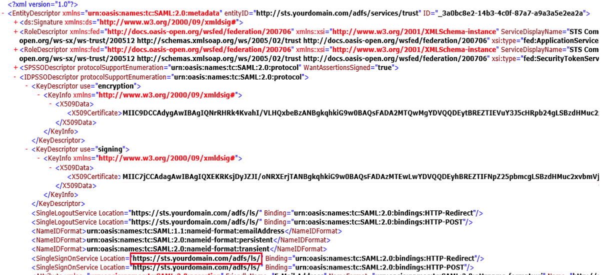
-
Paste this value into the Azure AD sign-on end point url field on GALE’s SSO setup page.
-
Copy and paste this URL link into the Azure AD federation metadata document field on GALE’s SSO setup page. 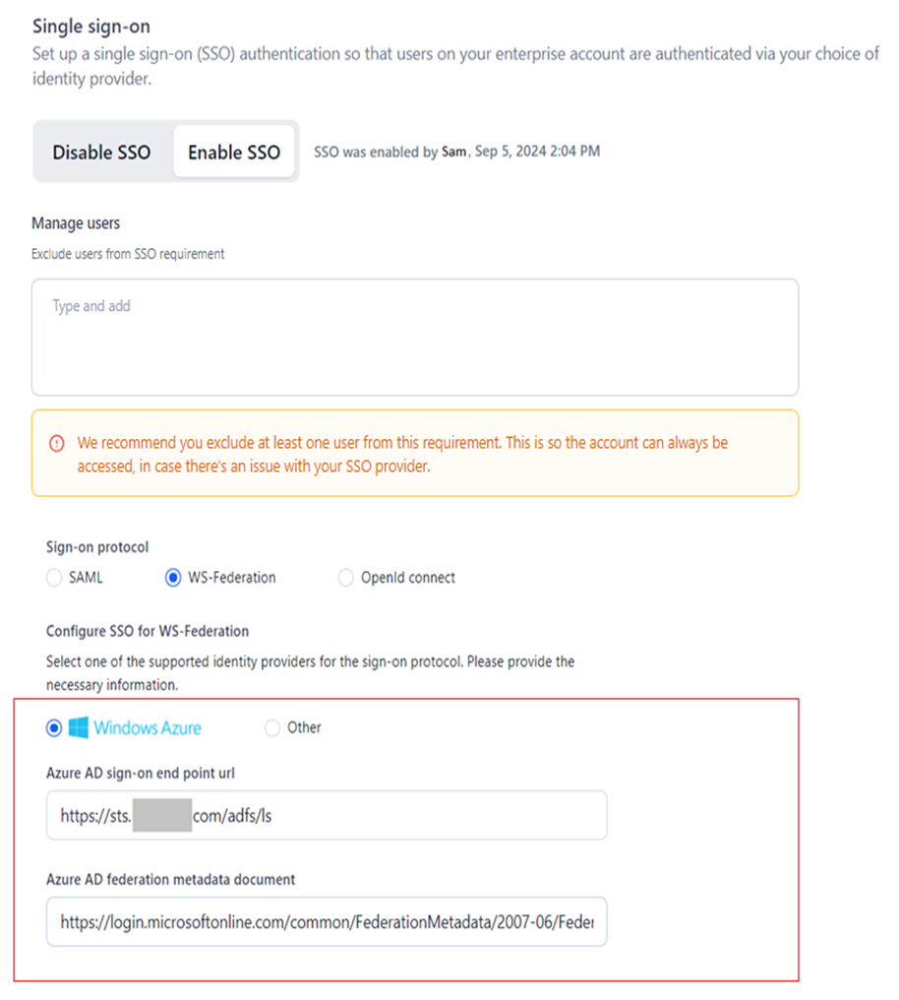
-
Click Save.
{kind=link}
{kind=link}
Other Configuration¶
To configure and enable SSO using WS-Federation and other IDPs of your choice, follow the steps below:
- Go to GALE’s Single sign-on page.
- Select the Enable SSO tab.
- Select WS-Federation for Sign-on protocol and Other to Configure SSO for WS-Federation.
- Copy and paste the SSO endpoint URL from the IDP’s portal into AD sign-on end point url on GALE’s SSO setup page.
-
Then, copy and paste the URL for the WS-Federation metadata document from the IDP’s portal into the AD federation metadata document url on GALE’s SSO setup page. 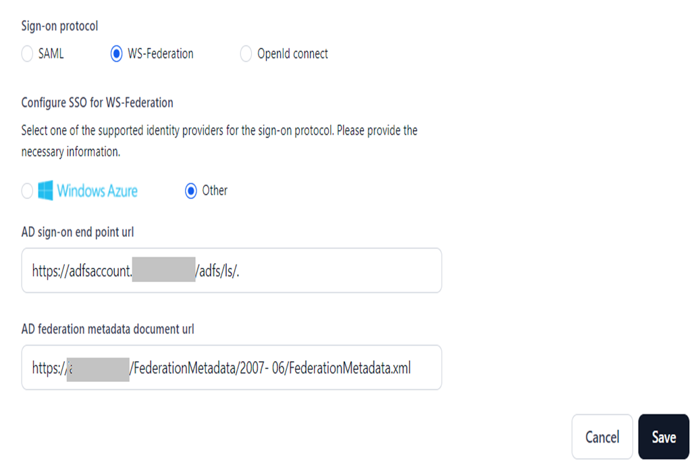
-
Click Save.
{kind=link}
OpenID Connect Configuration¶
OpenID Connect (OIDC) is an authentication layer built on top of the OAuth 2.0 framework that enables Single Sign-On (SSO) by providing a standardized way for applications to authenticate users and obtain user identity information. GALE currently supports Sign in with Google for this protocol.
How OpenID Connect Works¶
When a user logs into a system that acts as an IDP and tries to access his GALE account, the following happens:
- The application redirects the user to the IDP for authentication.
- The user logs in at the IDP portal.
- IDP redirects the user back with an authorization code.
- The application exchanges the code for ID and access tokens.
- The application validates tokens and grants access.
- Users can access other integrated applications without re-authenticating.
Google Configuration¶
To configure SSO using OpenId Connect and Google, follow the steps below:
- Go to GALE’s Single sign-on page.
- Select the Enable SSO tab.
-
Select OpenId Connect for Sign-on protocol and Sign in with Google to Configure SSO for OpenId connect. 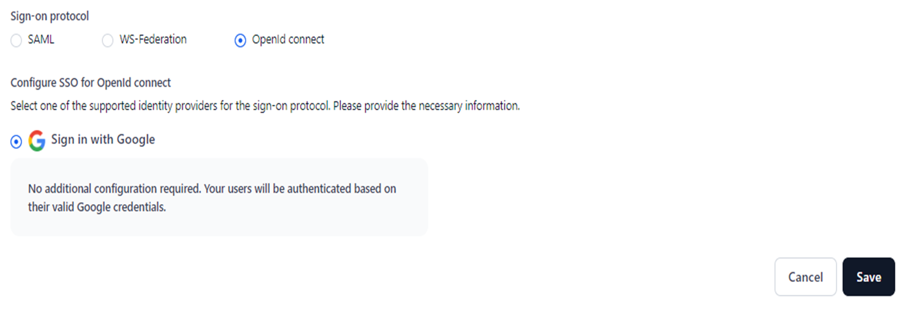
-
Click Save.
{kind=link}
Note
No further configuration is needed. Users will be authenticated using their Google account’s username and password.
Disable SSO¶
Disabling SSO resets the protocol and provider selections you made when SSO was enabled. This removes the current configuration and reverts your account to the default sign-in flow. SSO-based account access using the configured provider is disabled with this feature.
However, you can still view the previously configured SSO parameters for a specific protocol and provider by clicking the Enable SSO tab.
Steps to Disable SSO¶
- Access the Single sign on page.
-
Click the Disable SSO tab. 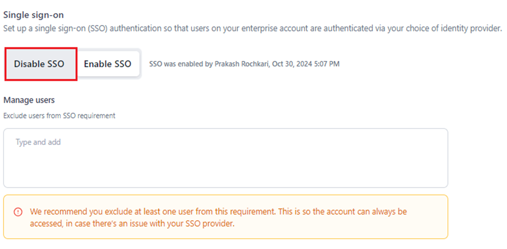
-
In the Disable SSO confirmation window, click Yes. 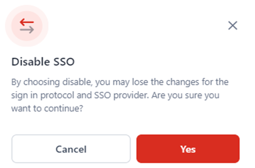
{kind=link}
{kind=link}
The following screen is displayed after SSO is disabled. 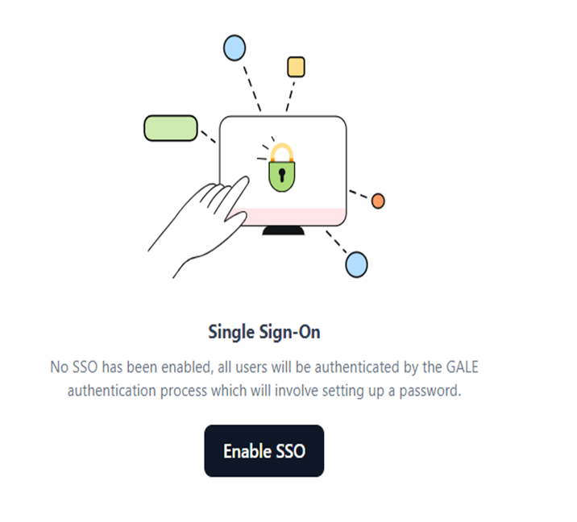
{kind=link}
Exclude Users from the SSO Requirement¶
The Manage Users feature on the Single Sign-On page allows the account owner to exclude specific users from the mandatory SSO flow. This enables selected users to access their GALE account through either the default sign-in flow or SSO service, which is helpful in the following situations:
- An error occurs during the SSO provider configuration, and the system prevents the user from logging in.
- The user wants to bypass log-in via the configured SSO provider.
- Technical issues arise with the SSO provider.
- The SSO configuration profile has expired.
- Business policy changes at the provider prevent the configured SSO from functioning.
Key Considerations
- By default, the account owner is excluded from the SSO requirement and can choose between the SSO flow or the default sign-in flow during login. Additionally, it is recommended to exclude at least one more account user.
- Excluded users can instantly switch to another account without signing in through SSO, if SSO is enabled.
- For users who are not excluded:
- If SSO is enabled for the account, they must sign in via SSO.
- If SSO is disabled, they can switch accounts directly without additional sign-in.
Steps
To exclude a user from the SSO requirement, follow the steps below:
- Navigate to the Single Sign-on page.
- Type and add an email address or select from the dropdown in the Manage Users textbox. 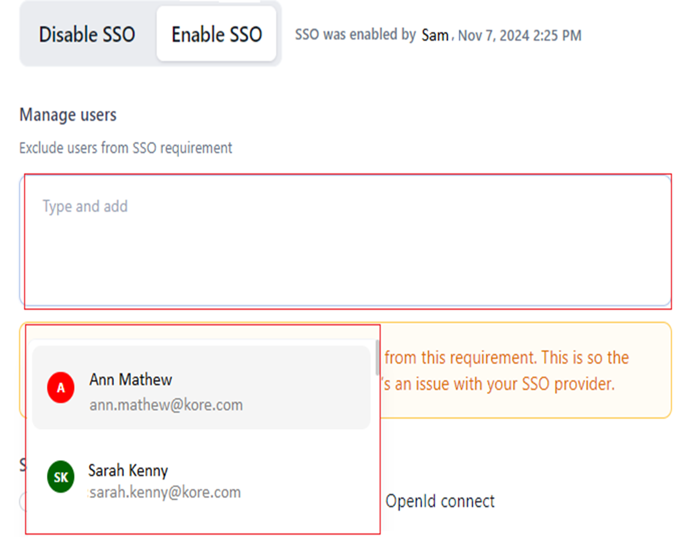
{kind=link}
You can add multiple users to the list, as shown below: 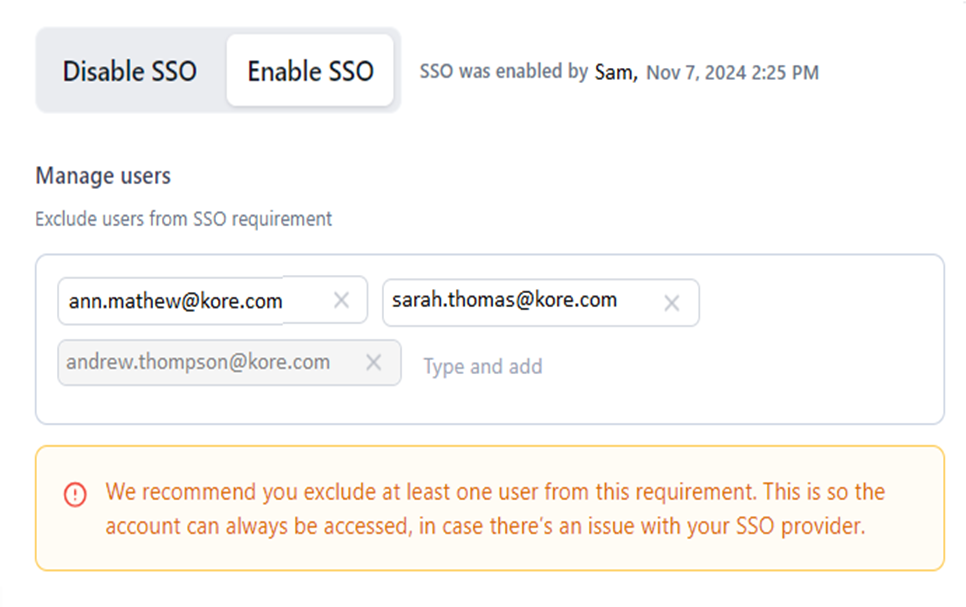
{kind=link}
- Click Save.
A success message is displayed, and the SSO sign-in is made optional for the user.
Sign-In Flow for the Excluded User¶
During sign-in, the following screen is displayed for the excluded user. 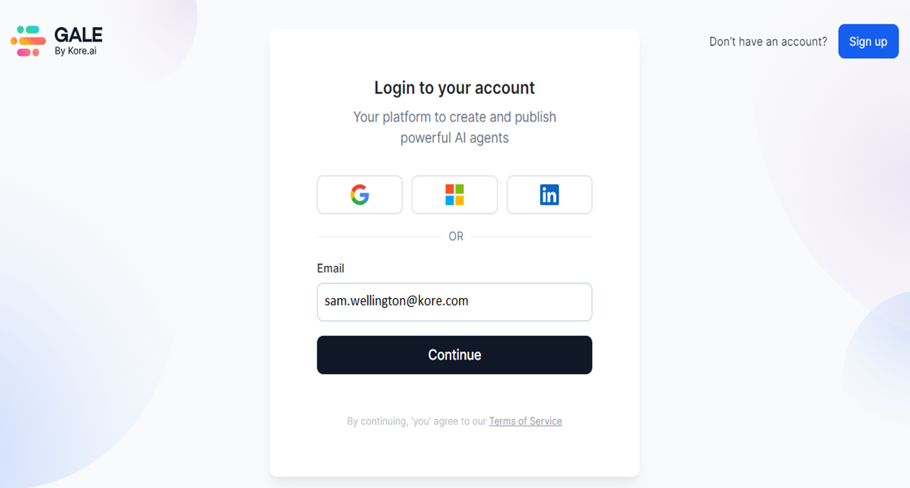
{kind=link}
When the user clicks Continue, one of the following happens:
When SSO is enabled, the following page is displayed. 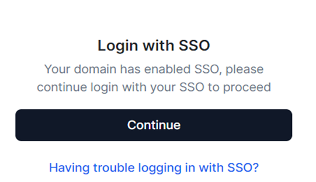
{kind=link}
The user can do one of the following:
- Click Continue to log in using the configured SSO provider service's sign-in page, for example, OKTA, as shown below:
{kind=link}
- Click “Having trouble logging in with SSO?” to sign in using the default option (email and password, Google, Windows, etc.) set during GALE sign-up.
When SSO is disabled, the user is taken through the default sign-in flow (email and password, Google, Windows, etc.).
Default Sign-in Flow¶
As a GALE admin, you can enable Single Sign-On (SSO) using a third-party provider. However, if your SSO security system fails or you forget your SSO credentials for your IDP, you can log into GALE using either email sign-in or your default SSO provider. Learn more.
Related Information¶
- Settings Console- Learn more about other GALE admin features.
- Accessing GALE- Sign up on GALE, create an account, and sign in.